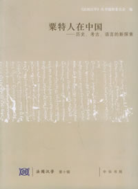

《粟特人在中国》
――历史、考古、语言的新探索
荣新江 华澜 张志清 主编
中华书局,2005年12月第1版

致读者
本辑《法国汉学》“粟特人在中国”专号与读者见面了。本辑收录了2004年4月23日至25日法国科研中心中国文明研究组（UMR Civilisation chinoise, EPHE-CNRS)及东方与西方考古研究组(UMR Archéologie d'Orient et d'Occident, ENS-CNRS)p北京大学中国古代史研究中心p法国远东学院北京中心（Centre de l'Ecole francaise d'Extrême-Orient à Pékin)和中国国家图书馆善本特藏部合作举办的“粟特人在中国--历史p考古p语言的新探索”国际研讨会的几乎所有论文的中文文本。会议由CCK Foundationp法国驻华大使^文化处(Service de coopération et d'actions culturelles de l'ambassade de France)资助, 戴仁(Jean-Pierre Drège)p谢和耐(Jacques Gernet)p张广达p陈力等知名学者担任名誉顾问。与会的八十余位学者分别来自中国p法国p英国p美国p日本p加拿大p德国和俄罗斯等国家，共提交了二十八篇论文，内容涉及粟特历史、考古、美术、宗教、语言等诸多方面。本书的编辑得到了海内外粟特文化研究界许多朋友的无私帮助。在此，首先要感谢各位中文译者，是在他们的辛勤工作的基础上我们今天才得以出版此书。我们还要感谢中国国家图书馆善本特藏部林世田先生帮助我们初步收集p整理及修改文章。魏义天（E. de La Vaissière)先生在准备即将出版的法文和英文版的同时也多次协调我们的工作。在文稿的一些技术处理上，我们要感谢法国远东学院北京中心主管秘书王戎小姐和北京大学的研究生毕波、王媛媛、李丹婕三位同学，他们做了许多具体工作，中国社会科学院历史研究所雷闻博士、中山大学历史系张小贵同学也帮了一些忙，在此一并致谢。
《法国汉学》几年以来不断地介绍法国汉学的研究情况，不过自本辑起，编辑委员会决定改变出版理念：希望尽量介绍中法合作研究项目的成果或是合作性的学术活动。为此，自本辑起，《法国汉学》的开本及版式装帧亦有所改动，希望更多的读者朋友能欣赏“新”的《法国汉学》。前 言
荣新江 著
“粟特人在中国”是一个随着近代学术产生而出现、并且不断获得新生命力的研究主题。我们知道，由于中亚的伊斯兰化和自然环境的变迁，粟特本土及其周边中亚地区的古代粟特人活动的遗迹早已荡然无存，我们只能从阿拉伯文和汉文史料中，看到一些粟特人活动的踪影。感谢中亚、中国各地的考古学成果，使得粟特研究，特别是粟特人进入中国的研究，随着十九世纪末叶以来近代学术的发展，不断向前推进，近年来更是获得了强劲的发展。
虽然中国传统的汉文文献中有不少关于粟特人在中国的记载，但这个问题作为一个研究主题，应当是缘于二十世纪初叶敦煌文书的发现，伯希和（P. Pelliot）根据敦煌写本《沙州都督府图经》，研究了唐代蒲昌海地区的粟特聚落，从而开拓了这一领域的研究。然而敦煌文献的发表有个很长的过程，因此，此后很长时间，学者们主要是根据传统的汉文文献材料来展开对粟特人在中国的研究，如桑原骘藏关于隋唐时期来华西域人、向达关于唐代长安的西域人与西域文明、蒲立本（E. G. Pulleyblank）关于六胡州的粟特人的研究，即为这方面的突出成就。但汉文文献材料也使得这种研究受到材料本身的限制，因此关注问题主要集中于一些粟特人的活动和一些特定的粟特聚落。六、七十年代以来，随着敦煌吐鲁番文书的大量公布，使得对粟特人在北朝隋唐时期的吐鲁番和敦煌的生活状况进行比较细致的观察成为可能，这就是池田温的《八世纪中叶敦煌的粟特人聚落》对敦煌从化乡粟特聚落的研究，以及姜伯勤在《敦煌吐鲁番文书与丝绸之路》一书中有关高昌、西州时期粟特人的研究。当然敦煌吐鲁番的汉文文书也是有一定局限性的，它们所记载的粟特人基本上是已经变成高昌王国或唐朝西州、沙州地方官府直接管理的粟特人，而非纯粹聚落时代的粟特人，用现在通用的说法，即他们是已经开始汉化的粟特人，而非我们现在从一些墓葬里看到的相对纯正的粟特人。敦煌吐鲁番文书中还有各种各样语言的文书，包括粟特人用自己的语言所写的粟特语文献，但已经可以译出的粟特语文献大多数是宗教文献，很少涉及粟特人的世俗活动，因此，最方便利用、且最早被利用起来的当然是敦煌吐鲁番的汉文文书。到目前为止，已经出土的或者说已知的敦煌吐鲁番文献几乎都已经出版，因此，我们可以做一些总结性的工作了。
最近二十年来，比较集中出版的另一类汉文材料也是非常重要的，它们就是入华粟特人的墓志或者是有关粟特人的碑刻、题记等石刻材料。这些材料虽然有些早已面世，但未能集中出版，所以在很长时间内，我们虽然在利用这些材料，但利用得还不够充分。墓碑和墓志都详细记录了来华粟特人的姓名、世系、来历、婚姻、事迹以及去世地点等信息，使得我们比较容易判断他们的族属和婚姻关系，而且近年发表的墓志比较多地出土于长安附近地区和洛阳之外的广阔地域（如山西、河北），使我们不再仅仅局限于“千唐志斋”系统的墓志所反映的洛阳地区的粟特人了。这方面的研究成果很多，即使只列举最主要的，也无法做到全面反映。
要判定进入中国、或者说进入到中原地区的粟特人属性，我们需要利用在中亚或是在粟特本土发现的考古文物材料，比如像瓮棺、壁画、金银器皿和穆格山文书等，还有丝绸之路沿线所出土的粟特语文献，但是这些材料和文献，与中国已有的传统文献和敦煌吐鲁番文书，在很长时间里没有结合到一起来讨论。当然，粟特人在中国留下的他们自己的语言资料对于我们认识粟特人在中国的生活是非常重要的，比如说像粟特文古信札或者是史君墓的双语铭文，以及吐鲁番新出的粟特文摩尼教徒信札，这些材料对于我们理解在中国的粟特人都是最直接的材料。然而，由于语言解读上的艰难，这些材料很多也是在最近十年才刚刚准确地被翻译出来，像敦煌粟特文古信札第二号也就是在2001年才由Sims-Williams教授提供了一个完整的英文翻译；吐鲁番粟特文摩尼教徒信札也是在出土后二十年才由吉田丰教授发表了译文。对于中国学者来讲，过去我们对粟特本土的考古资料不是很熟悉，所以对于判定一些中国的考古资料的粟特属性有一定的困难。因此，在考古、语言等方面，东西方学者虽然各自有各自的贡献，但由于政治的或是语言方面的障碍，双方未能进行太多的交流。近年来，这一局面已经迅速改观。
从1999年开始，以虞弘墓的发现为肇始，随之而来的是安伽墓、史君墓、康业墓，这一系列重大发现，对于我们这些对粟特感兴趣的学者而言，真的可以说是赶上了一个很好的时代。由于这些粟特人墓葬都经过科学的考古发掘，因而使得我们可以重新判定原本在天水、青州、安阳出土以及流散在外的Miho美术馆所藏同类考古材料的粟特属性。在此，我们应当感谢山西、陕西等地的考古学家给我们提供的非常丰富的材料以及他们具有开拓性的研究成果。
这些在中国发现的粟特人墓葬，吸引了全世界从事粟特考古、历史、语言、宗教等领域研究的学者，大大促进了国际间的学术交流。以下列举一些比较重要的学术活动，由此即可管窥一斑。2000年7月，在美国芝加哥大学巫鸿（Wu Hung）教授的主持下，北京大学考古系主办了“汉唐之间：文化的互动与交融学术研讨会”，与会者就新发现的虞弘墓进行了热烈的讨论。2001年初香港出版的英文刊物《中国考古艺术摘要》（China Archaeology and Art Digest）第4卷第1期（标作2000年12月出版），作为“中国祆教研究专号”，把一组中国学者的论文翻译成英文发表，使得西方学者对于主要用中文写作的中国学者的部分研究状况有了比较清楚的了解。同年5月，北京大学联合“唐研究基金会”邀请多年主持粟特地区考古发掘的俄罗斯学者马尔沙克（B. I. Marshak）教授来北大讲演，他对粟特石棺图像的见解，后来以《六世纪下半叶中国艺术中的粟特主题》为名发表。2002年4月21日，耶鲁大学韩森（Valerie Hansen）教授主办了“中国新发现的粟特墓葬研讨会”（Workshop on the Sogdian tombs in China），以考古、历史和艺术史研究者为主，讨论了新发现的粟特图像。同年11月中旬，我们又邀请近年一直在粟特地区从事考古工作的法国学者葛乐耐（Frantz Grenet）教授前来北京大学，报告他与乌兹别克学者在粟特本土的最新发现，并且和中国学者进行了深入的交流。与此同时，北京大学中国古代史研究中心举办“古代中外关系史：新史料的调查、整理与研究国际学术研讨会”，与会者也提交了一些与粟特相关的论文。随后，日本Miho美术馆又举办了“中国的中亚人：丝绸之路东部的考古发现学术研讨会”（Symposium “Central Asians in China - Discoveries in the East of the Silk Road”），讨论的中心问题也是粟特人。这些学术活动大大推动了东西方对于“粟特人在中国”这一主题的研究进步。
如此一来，东西方学者有了一些共同的话题，我们可以在一起讨论祆教的艺术，我们可以一起从各种角度去关心粟特的商人、粟特商队的首领，关心那些武士和伎乐。今天，东西方学者能够坐在一起，如此密切地讨论问题，如此坦诚地交换意见，既是因为我们身处一个能够拥有非常丰富资料的好时代，更是国际间学术交流合作日臻成熟的真实反映。
根据两年前与童丕（Eric Trombert）、魏义天（Etienne de la Vaissière）先生讨论的结果，我们希望本次研讨会的重点更多的是放在社会、文书、墓志等方面的主题上，也就是着重在历史层面的讨论，因为我们知道，此前在北京，在耶鲁，在Miho，讨论的重点都集中在粟特美术和考古上。我们高兴地看到，与会者提交了内容丰富的研究成果。不过，因为在筹办会议的过程中又发现了史君墓，所以大家还是不可避免、兴致勃勃地继续探讨了粟特美术考古的话题。
现在，这次会议的成果就以论文集的方式完整地展示在读者面前，对此魏义天先生在《结语》中已做了很好的总结，毋庸我再多言。在此，我想说的是，我们要承认，不论是传统的文献材料，还是陆续发现的文书资料、最新的考古文物，都有各自材料本身的局限性。所以，我们应该注意在我们取得辉煌成果的同时，必须清楚我们自己的局限，注意自己的方法，尽量多地把各种各样的信息放到一起来研究。
当然，本次会议不可能全部展示粟特人在中国的方方面面。我们本来准备邀请参加、但由于其他原因未能到会的张广达、马尔沙克、池田温、宗德曼（W. Sundermann）等先生，以及在座的发言或没有发言的先生，如耿世民、梅维恒（Victor H. Mair）、杨泓、徐文堪、乐仲迪（Judith Lerner）、邢福来、张乃翥、罗丰、郑岩、赵丰等一系列非常优秀的学者，他们在许多方面实际上对粟特的研究都有过贡献，但由于时间关系，讨论虽然非常紧张热烈，但还是无法把他们的意见心得汇集到本次会议的论文集里来，对此，我略感遗憾。
就中国新发现的考古材料来说，我们很遗憾，这次没有文章讨论汉简里的相关信息，也没有文章涉及粟特佛教的内容以及青海都兰的发现。因此，实际上还有很多层面未能在这次讨论会上加以探讨，我们期待将来能有机会进行深入的研究。
即便是本次会议所强调的社会史视角，仍有许多问题值得深入，比如说商队的构成、贸易的实态，也就是说粟特商人的贸易网络是如何运作的。还有一些问题我们虽然讨论到了，但还有可以深入的余地，如粟特聚落内外的婚姻问题。还有一些由此延伸开来的问题，比如说入居城市的粟特人的居住形态、从性别的角度看粟特女性等等。总之，还有很多的课题亟待我们去努力研究。目 录致读者
前 言………………………………………………………………………………………………荣新江粟特萨宝与商队贸易
西安北周史君墓石椁图像初探……………………………………………………………………杨军凯
西安史君墓粟特文汉文双语题铭汉文考释………………………………………………………孙福喜
西安新出史君墓志的粟特文部分考释……………………………………………………………吉田丰
入华粟特人萨宝府身份体制与画像石纪念性艺术 …………………………………………… 姜伯勤
萨保与萨薄：佛教石窟壁画中的粟特商队首领 ……………………………………………… 荣新江
粟特文古信札新刊本的进展…………………………………………………………辛姆斯・威廉姆斯
帕尔米拉的商队及商队首领 …………………………………………………………………… 丁爱博
唐代粟特商人与汉族商人 …………………………………………………………………… 荒川正晴粟特聚落与地方社会
丝绸之路贸易对吐鲁番地方社会的影响：公元500―800年 ………………………………… 韩 森
公元7－8世纪高昌粟特社会的文献记录：唐朝户籍所见文化的差异和演变……………… 斯加夫
晚唐五代敦煌地区的胡姓居民与聚落 …………………………………………………………郑炳林
粟特人在龟兹：从考古和图像学角度来研究 ………………………………………………影山悦子
中国北方的粟特遗存――山西的葡萄种植业 ………………………………………………… 童 丕
唐后期至五代的粟特武人……………………………………………………………………… 森部丰
粟特柘羯军在中国……………………………………………………………………………… 魏义天
论中国及粟特对突厥社会货币的影响(公元6－9世纪)………………………… 弗朗索瓦・蒂埃里
小洪那海突厥可汗陵园调查记………………………………………………………………… 林梅村
两汉魏晋南北朝正史有关早期SOGDIANA的记载 ………………………………………………余太山入华粟特人的宗教与艺术
粟特人的自画像……………………………………………………………………………………葛乐耐
从石到丝：公元475-650年前后粟特、鲜卑、汉、朝鲜与日本等
各民族间葬具的文化转换………………………………………………………………………盛余韵
河南沁阳北朝墓石床考――兼谈石床床座纹饰类比……………………………………………施安昌
何家村遗宝与粟特文化……………………………………………………………………………齐东方
北朝隋唐粟特的“胡腾舞” …………………………………………………………………… 张庆捷
筋斗背后的故事――从一个家喻户晓的词汇透视粟特文化的遗踪 ……………………………段 晴
祆神崇拜：中国境内的中亚聚落信仰何种宗教 ……………………………………………… 黎北岚
南太后考：吐鲁番出土的北凉写本《金光明经》题记与古代高昌及其毗邻地区
的那那信仰与祆教遗存………………………………………………………………………… 王 丁
东方摩尼教的实践及其演变………………………………………………………………………芮传明
粟特文t’mp’r（肉身）考………………………………………………………………………马小鹤结 语………………………………………………………………………………………………魏义天
北京大学中国古代史研究中心